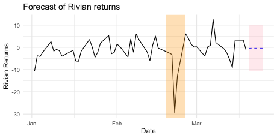
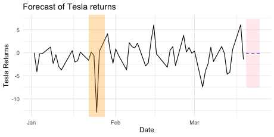

Keywords: BEV(Battery Electric Vehicle), GARCH
model, VAR, Stock Market returns, Mean Absolute Percent Error(MAPE),
Combustion engine vehicle.
JEL: G170; C460; C58.
[This version of the paper is preliminary. Please do not
quote without the author’s permission]
The literature on predicting market returns and volatility encompasses various methodologies and findings, providing valuable insights into the dynamics of financial markets. Shen et al. (2021) employ tGARCH and VAR models to forecast future market returns and volatility in their study titled "Predicting stock and bond market returns with emotions: Evidence from futures markets" . Utilizing a VAR(5) model with a lag of five days for the business week, they identify a single predictor among five initially considered variables that significantly influences future market returns. In a similar vein, Li and Sun (2023) explore the predictive power of credit risk on Chinese stock market returns in their paper "Predicting stock market returns using aggregate credit risk" . Employing regression and VAR(1) models, they find that their models perform well in short-range forecasts but exhibit diminished accuracy over longer forecast horizons. This underscores the importance of considering the forecast window duration when developing predictive models for market returns. Cai and Stander (2019) delve into the estimation and density forecasting of financial returns using the threshold GARCH model in their research . They highlight the limitations of the traditional GARCH(1,1) model, particularly its failure to capture the stylized fact that conditional variance tends to increase after a decrease in returns compared to an increase. Despite testing various GARCH models, including GARCH(3,2) and GJR-GARCH(2,1,2), they find that the GARCH(1,1) model exhibits superior out-of-sample predictive power. In contrast, Hansen and Lunde (2001) focus on comparing volatility models in their paper "A forecast comparison of volatility models: Does anything beat a GARCH(1,1)?" . While they find no evidence that the GARCH(1,1) model is outperformed by other GARCH or ARCH models with respect to exchange rate data, they observe marginally better performance in predicting stock returns, albeit with limited data from IBM stock returns. Notably, they emphasize the necessity of accounting for leverage effects to achieve robust out-of-sample performance.
Building upon this literature, the present study aims to forecast the volatility and returns of Battery Electric Vehicle (BEV) startup company stocks by leveraging complementary and substitutionary goods and commodities. Through the application of GARCH and VAR models, we seek to identify optimal modeling approaches and evaluate their forecasting performance using the Mean Absolute Percentage Error (MAPE). By examining the interplay between BEV stock returns and external factors, this research contributes to our understanding of market dynamics and informs decision-making in investment and risk management strategies.
The rest of the paper is organized as follows. Section 2 introduces
the basic model framework. In section 3, we introduce the data used for
the analysis and look into the methodology. Section 4 provides empirical
applications. Section 5 concludes. All the proofs are provided in
Appendix A and some tables and figures are collected in Appendix
B.
\[\label{eq:garch_model} \sigma^2_t = \omega + \alpha_1\epsilon^2_{t-1} + \beta_1\sigma^2_{t-1} + \gamma X_{t-1}\]
In my research, I employ a variant of the Generalized Autoregressive Conditional Heteroskedasticity (GARCH) model, specifically the GARCH(1,1) model with an external regressor. This model is used to estimate the conditional variance of the returns of a stock, which helps in understanding the volatility dynamics of the stock market. Breaking down the components of the model shown in equation [eq:garch_model], conditional variance (\(\sigma_t^2\)) term represents the variance of the stock returns at time \(t\), given the information available up to time \(t\). In other words, it captures the volatility of the stock returns. Intercept (\(\omega\)), this is the constant term in the variance equation representing the baseline level of volatility. ARCH Effect (\(\alpha_1\)) parameter captures the impact of past squared errors (residuals) on the current conditional variance. It signifies the autoregressive conditional heteroskedasticity (ARCH) effect, where past shocks to the system affect the current volatility. GARCH Effect (\(\beta_1\)) parameter measures the impact of past conditional variances on the current variance. It represents the volatility persistence in the stock returns, indicating whether volatility tends to persist over time. External Regressor (\(X_{t-1}\)) term introduces an external variable into the model, namely the lagged returns of another stock. By including this regressor, we aim to capture any additional explanatory power that the lagged returns of another stock may have on the volatility of the current stock returns. Overall, the GARCH(1,1) model with an external regressor allows me to model the conditional variance of stock returns, taking into account both past volatility and the influence of an external variable. This provides valuable insights into the volatility dynamics of the stock market, which is essential for risk management and investment decision-making.
\[\label{eq:var_model} \begin{aligned} \begin{bmatrix} Y_{1,t} \\ Y_{2,t} \\ \vdots \\ Y_{n,t} \end{bmatrix} &= \begin{bmatrix} A_{11} & A_{12} & \dots & A_{1n} \\ A_{21} & A_{22} & \dots & A_{2n} \\ \vdots & \vdots & \ddots & \vdots \\ A_{n1} & A_{n2} & \dots & A_{nn} \end{bmatrix} \begin{bmatrix} Y_{1,t-1} \\ Y_{2,t-1} \\ \vdots \\ Y_{n,t-1} \end{bmatrix} + \begin{bmatrix} B_{11} & B_{12} & B_{13} \\ B_{21} & B_{22} & B_{23} \\ B_{31} & B_{32} & B_{33} \end{bmatrix} \begin{bmatrix} X_{1,t-1} \\ X_{2,t-1} \\ X_{3,t-1} \end{bmatrix} + \begin{bmatrix} \varepsilon_{1,t} \\ \varepsilon_{2,t} \\ \vdots \\ \varepsilon_{n,t} \end{bmatrix} \end{aligned}\]
Vector Autoregression (VAR) 1 Model for Stock Returns In the context of financial markets, particularly the stock market, the VAR model serves as an instrument for understanding the interdependencies among various assets and their external drivers. In this study, we employ a VAR model to investigate the behavior of stock returns, considering the influence of three external regressors: returns of Gasoline, Lithium Battery, and Chargepoint stocks. The VAR model proposed in equation [eq:var_model] posits a linear relationship between the current values of stock returns and their lagged values, along with the lagged returns of the external regressors. Here, \(Y_t\) represents a vector comprising the returns of the stock at time t, while \(X_{1,t-1}, X_{2,t-1}\), and \(X_{3,t-1}\) denote vectors representing the lagged returns of Gasoline, Lithium Battery, and Chargepoint stocks, respectively. The coefficient matrices \(A_1, A_2, ..., A_p\) capture the lagged effects of stock returns, whereas B1, B2, B3 represent the coefficients associated with the lagged external regressors. The error term \(\epsilon_t\) reflects unobserved factors influencing stock returns at time \(t\). The VAR model offers several statistical properties essential for comprehensively analyzing the dynamics of stock returns: Granger Causality VAR models facilitate the assessment of Granger causality, a fundamental concept in econometrics that examines whether past values of one variable contain predictive information about another variable. Impulse Response Function (IRF), enables researchers to gauge the dynamic response of each variable within the system to exogenous shocks or innovations. By simulating the effects of one-time disturbances, IRF analysis elucidates the interplay between stock returns and the external regressors over time. Forecasting, Leveraging past observations and estimated coefficients, VAR models are adept at forecasting future values of stock returns. These forecasts provide valuable insights for investors and analysts, aiding in decision-making processes and risk management strategies. In summary, the VAR model serves as a robust framework for investigating the intricate relationships between stock returns and external factors, offering valuable insights into the dynamics of financial markets and informing strategic decision-making in investment and portfolio management.
I sourced the data for my analysis from Yahoo Finance, comprising daily stock data from November 30th, 2021, to March 19th, 2024, totaling 578 observations. This timeframe was selected to analyze potential predictors for Rivian stock, as Rivian went public in November 2021. The stock data includes battery electric vehicle (BEV) startup companies Faraday Future, Fisker, Tesla, Rivian, Nio, and Lucid. These companies exclusively produce BEVs, distinguishing them from traditional automakers like Volkswagen and Ford, which also manufacture combustion engine vehicles. By focusing solely on BEV producers, we aim to avoid potential biases introduced by external factors affecting diversified automakers. Additionally, I acquired stock data for BEV charger manufacturers Blink and Chargepoint, anticipating their stock performance could serve as a robust predictor for BEV startup companies. Furthermore, I incorporated data on key commodities such as crude oil, gasoline, and lithium. Crude oil was selected due to its significance in electricity generation, which is essential for BEVs. Gasoline prices were included considering their impact on consumer preferences, potentially influencing the adoption of BEVs. Lastly, lithium, a critical component in BEV batteries, was examined as fluctuations in its cost could affect BEV production and subsequently impact stock returns. After obtaining the stock data of the companies and commodities I then removed the columns ’symbol’, ’open’, ’high’, ’low’, ’close’, and ’volume’ as these columns are unnecessary for the task. I used the ’Adjusted Close’ column of the data to compute the returns of a stock using equation [eq:return].
\[\label{eq:return} R_t = \frac{p_t - p_{t-1}}{p_{t-1}}\]
Table 1 & 2 in section 7 provide the descriptive statistics and a correlation matrix for the variables used in this study: Faraday Future(FF), Fisker, Tesla, Rivian, Nio, Lucid, Blink, Chargepoint, crude oil, gasoline, and lithium.
In this section, we implement the proposed model and estimation procedure using empirical data collected from November 30th, 2021, to March 19th, 2024. Descriptive statistics and correlations of the returns of BEV stocks are presented in Table 1 of Appendix B. The mean returns indicate the average daily performance of each stock, with negative values observed for most companies, suggesting overall negative returns during the period under review. Variance, skewness, and kurtosis statistics provide insights into the distribution and volatility of stock returns, highlighting notable disparities among BEV companies.
Similarly, Table 2 in Appendix B provides descriptive statistics and correlations for the returns of dependent variables, including crude oil, gasoline, lithium, and BEV charger manufacturers. The high correlation coefficients between certain variables, such as crude oil and gasoline, underscore their interrelatedness and potential impact on BEV stock returns.
Furthermore, Table 3 and 4 in Appendix B presents the optimal number of lags to use in the Vector Autoregression (VAR) models for Rivian and Tesla returns. The selection criteria, including AIC, BIC, and FPE, aid in determining the most suitable lag structure for the VAR models. These results inform the specification of the VAR models and contribute to the accuracy of return forecasts.
Tables 5 and 6 in Appendix B detail the results of the Granger Causality Tests for Rivian and Tesla returns, respectively. These tests assess whether past values of one variable contain predictive information about another variable, providing insights into potential causal relationships among BEV stocks and external factors. The p-values associated with each test indicate the significance levels of the causal relationships, with higher p-values suggesting weaker evidence of causality.
Table 7 in Appendix B displays the AIC and BIC values for different GARCH models of Rivian returns. The Akaike Information Criterion (AIC) and Bayesian Information Criterion (BIC) are widely used measures for model selection, with lower values indicating better model fit. The table presents various GARCH specifications, including ARMA(0,0) GARCH(1,1) and ARMA(1,1) GARCH(2,1), along with their corresponding AIC and BIC values. These metrics aid in identifying the most appropriate GARCH model for capturing the volatility dynamics of Rivian returns. The results provide insights into the effectiveness of different model specifications in explaining the observed volatility patterns.
Table 8 in Appendix B presents the AIC and BIC values for different GARCH models of Tesla returns. Similar to Table 7, this table displays the AIC and BIC values for various GARCH specifications, allowing for comparisons of model performance. The table includes models such as ARMA(0,0) GARCH(1,1) and ARMA(1,1) GARCH(2,1), along with their respective AIC and BIC values. By examining these metrics, researchers can identify the GARCH model that best captures the volatility dynamics of Tesla returns. The results offer insights into the suitability of different model specifications for modeling Tesla’s return volatility.
Table 9 provides the Mean Absolute Percentage Error (MAPE) values for forecasts of returns and volatility for both Rivian and Tesla. MAPE is a commonly used metric for evaluating the accuracy of forecasts, with lower values indicating higher forecast accuracy. The table presents the MAPE values for both return and volatility forecasts, offering insights into the performance of the forecasting models. The observed MAPE values for Rivian and Tesla provide an assessment of the forecasting accuracy achieved by the VAR and GARCH models. These results inform researchers and investors about the reliability of the forecasting models in predicting future returns and volatility for Rivian and Tesla stocks.
Figure 1 illustrates the returns of Rivian over time, focusing on the dates between February 19 and February 26. The forecasted values of Rivian returns are depicted by the dotted blue line, with the upper and lower confidence levels shown at a 95% confidence interval. The highlighted period from February 19 to February 26 in Rivian’s returns is notable for a significant decline of approximately 30%. Upon closer examination of the news during that week, it was revealed that this decline was attributed to disappointing 2024 deliveries and earnings reported on February 23. The market’s reaction suggests that expectations were not met, resulting in the observed decrease in returns. However, the subsequent rebound in returns may indicate that the initial sell-off reaction was possibly exaggerated.
Figure 2 portrays the returns of Tesla over time, with a focus on the dates between January 22nd and January 28th. Similarly, the forecasted values of Tesla returns are represented by the dotted blue line, along with the upper and lower confidence levels at a 95% confidence interval. The highlighted period from January 22nd to January 28th in Tesla’s returns reflects a decline of approximately 12%. Upon reviewing the news related to Tesla’s returns on January 25th, 2024, it was revealed that the decrease in returns was attributed to the company reporting earnings that missed expectations, along with warnings of a slowdown in 2024. Once again, the subsequent rebound in returns may suggest that the initial sell-off reaction was potentially exaggerated.
Overall, the empirical data analysis sheds light on the dynamics of BEV stock returns and their relationships with external factors. The descriptive statistics, correlations, lag selection criteria, and Granger Causality Test results collectively contribute to our understanding of the factors influencing BEV stock performance and inform the development of forecasting models.
Upon reviewing the results presented in Table 9, it becomes evident
that both the VAR and GARCH models exhibit noticeably high MAPE (Mean
Absolute Percentage Error) values. This suggests that the forecasts
generated by these models may lack accuracy. Furthermore, the observed
high MAPE values indicate a potential lack of explanatory power in the
returns of Gasoline, Lithium Battery, and EV Charger producer stocks.
While the MAPE for the forecast of Rivian appears to be relatively
decent, further research is warranted to ascertain whether this
performance holds consistently over the entire lifetime of the stock.
Additionally, it’s crucial to investigate whether this outcome is an
isolated occurrence, given that the stock exhibited lower volatility
during the forecast period compared to historical data. As of now we
cannot predict the future of the cars of the future. Future research
endeavors should aim to develop a VAR-GARCH model capable of leveraging
stock volatility data to enhance the accuracy of return forecasts.
Additionally, there is a need to refine the forecasting horizon to
shorter periods, such as 1 or 2 days, and evaluate the model’s
performance on a day-to-day basis to assess its precision with a more
focused forecast. Exploring the potential explanatory power of the
number of active EV car chargers in a region could be a valuable avenue
for investigation. This aspect, not fully captured by stock returns
alone, suggests the potential benefits of integrating geospatial data
into the modeling framework. By incorporating real-time data on active
EV chargers, it may be possible to better predict future returns,
considering the influence of infrastructure development on consumer
behavior towards electric vehicles. Exploring the impact of the
implementation of the Federal carbon tax on the returns of an EV startup
stock is of particular interest. Although my analysis was constrained by
the IPO timing of Rivian, focusing solely on stocks that debuted before
the introduction of the Federal carbon tax would allow for a clearer
examination of the policy’s influence on EV stock returns. Additionally,
investigating the effects of the Federal rebate for EV cars presents
another intriguing avenue for research. Given that this incentive
encourages Canadians to purchase EVs, it is reasonable to anticipate a
positive impact on the returns of relevant stocks. Exploring this
relationship further could provide valuable insights into the dynamics
between government policies and EV market performance.
| Panel A | FF | Fisker | Lucid | Nio | Rivian | Tesla |
|---|---|---|---|---|---|---|
| mean | -1.65 | -1.17 | -0.51 | -0.37 | -0.41 | -0.14 |
| variance | 115.87 | 65.16 | 26.16 | 24.63 | 27.34 | 14.14 |
| skewness | 0.30 | -5.83 | 0.51 | 0.37 | -0.45 | -0.24 |
| kurtosis | 7.47 | 71.99 | 8.47 | 4.86 | 6.45 | 3.97 |
| Panel B | FF | Fisker | Lucid | Nio | Rivian | Tesla |
| FF | 1.00 | |||||
| Fisker | 0.21 | 1.00 | ||||
| Lucid | 0.25 | 0.38 | 1.00 | |||
| Nio | 0.26 | 0.30 | 0.54 | 1.00 | ||
| Rivian | 0.16 | 0.35 | 0.67 | 0.56 | 1.00 | |
| Tesla | 0.21 | 0.27 | 0.56 | 0.52 | 0.56 | 1.00 |
| Panel A | Crude | Gasoline | LitBat | Chargepoint | Blink |
|---|---|---|---|---|---|
| mean | 0.05 | 0.05 | -0.12 | -0.45 | -0.44 |
| variance | 3.05 | 2.93 | 3.83 | 28.82 | 25.90 |
| skewness | -0.42 | -0.48 | 0.094 | -0.60 | 0.63 |
| kurtosis | 3.67 | 4.20 | 3.28 | 10.21 | 5.37 |
| Panel B | Crude | Gasoline | LitBat | Chargepoint | Blink |
| Crude | 1.00 | ||||
| Gasoline | 0.94 | 1.00 | |||
| LitBat | 0.17 | 0.19 | 1.00 | ||
| Chargepoint | 0.01 | 0.03 | 0.49 | 1.00 | |
| Blink | 0.04 | 0.04 | 0.50 | 0.67 | 1.00 |
| selection | criteria.1 | criteria.2 | criteria.3 | criteria.4 ... | |
|---|---|---|---|---|---|
| AIC(n) | 1 | 8.29 | 8.31 | 8.33 | 8.37 ... |
| HQ(n) | 1 | 8.35 | 8.42 | 8.49 | 8.57 ... |
| SC(n) | 1 | 8.44 | 8.59 | 8.73 | 8.89 ... |
| FPE(n) | 1 | 3982.78 | 4068.04 | 4151.32 | 4303.34... |
| selection | criteria.1 | criteria.2 | criteria.3 | criteria.4 ... | |
|---|---|---|---|---|---|
| AIC(n) | 1 | 7.65 | 7.67 | 7.69 | 7.71 ... |
| HQ(n) | 1 | 7.71 | 7.78 | 7.85 | 7.91 ... |
| SC(n) | 1 | 7.80 | 7.94 | 8.09 | 8.23 ... |
| FPE(n) | 1 | 2092.56 | 2139.35 | 2196.39 | 2220.36 ... |
| Granger Causality Test | F-Test | p-value |
|---|---|---|
| Rivian does not cause Gas | 1.5337 | 0.2038 |
| Gas does not cause Rivian | 1.8225 | 0.1409 |
| LitBat does not cause Rivian | 0.90716 | 0.4368 |
| CP does not cause Rivian | 0.039752 | 0.9894 |
| Granger Causality Test | F-Test | p-value |
|---|---|---|
| Tesla does not cause Gas | 0.86932 | 0.4563 |
| Gas does not cause Tesla | 2.0865 | 0.09996 |
| LitBat does not cause Tesla | 1.8949 | 0.1283 |
| CP does not cause Tesla | 1.5879 | 0.1903 |
| Model | AIC | BIC |
|---|---|---|
| ARMA(0,0) GARCH(1,1) | 6.1424 | 6.1808* |
| ARMA(1,0) GARCH(1,1) | 6.1454 | 6.1916 |
| ARMA(0,1) GARCH(1,1) | 6.1455 | 6.1916 |
| ARMA(1,1) GARCH(1,1) | 6.1471 | 6.2009 |
| ARMA(0,0) GARCH(2,1) | 6.1422* | 6.1883 |
| ARMA(1,0) GARCH(2,1) | 6.1453 | 6.1991 |
| ARMA(0,1) GARCH(2,1) | 6.1453 | 6.1991 |
| ARMA(1,1) GARCH(2,1) | 6.1473 | 6.2088 |
| ARMA(0,0) GARCH(2,2) | 6.1829 | 6.2367 |
| Model | AIC | BIC |
|---|---|---|
| ARMA(0,0) GARCH(1,1) | 5.4993 | 5.5381 |
| ARMA(1,0) GARCH(1,1) | 5.5028 | 5.5493 |
| ARMA(0,1) GARCH(1,1) | 5.5028 | 5.5493 |
| ARMA(1,1) GARCH(1,1) | 5.5025 | 5.5568 |
| ARMA(0,0) GARCH(2,1) | 5.4951 | 5.5416 |
| ARMA(1,0) GARCH(2,1) | 5.4986 | 5.5528 |
| ARMA(0,1) GARCH(2,1) | 5.4986 | 5.5528 |
| ARMA(1,1) GARCH(2,1) | 5.4985 | 5.5605 |
| ARMA(0,0) GARCH(2,2) | 5.4903* | 5.5446* |
| Rivian | Tesla | |
|---|---|---|
| Forecasted Returns MAPE | 79.7571 | 95.56485 |
| Forecasted Volatility MAPE | 84.73849 | 166.2075 |


Department of Economics, University of Waterloo, Waterloo, Ontario, N2L 3G1, Canada. Email: a4girgis@uwaterloo.ca↩︎